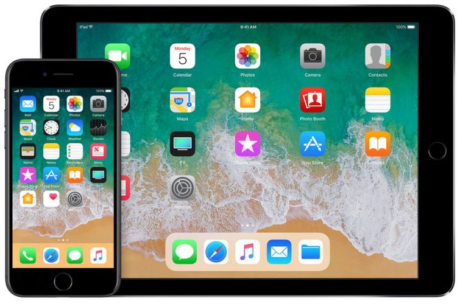

Tak Puas dengan iOS 11, Ini Cara Kembalikan ke iOS 10
FATIMAH KARTINI BOHANG
KabarKabur.com - 27/09/2017, 19:50 WIB

iOS 11(Apple)
KabarKabur.com - Banyak yang senang dengan fitur-fitur baru pada sistem operasi iOS 11. Kendati begitu, ada pula yang kurang puas dan menyesal melakukan upgrade.
Beberapa laporan mengatakan iOS 11 masih membawa masalah, antara lain pada daya tahan baterai dan gangguan untuk beberapa aplikasi. Jika Anda merasakan hal serupa, downgrade ke iOS 10 masih bisa dilakukan dengan langkah mudah.
Satu hal yang harus diperhatikan, proses downgrade ini tidak resmi. Melakukan ini bisa menghapus garansi.
Pertama, pastikan Anda telah menginstal aplikasi iTunes terbaru pada desktop. Buka aplikasi itu lalu tekan “Help” dan “Check for Updates”. Selanjutnya, Anda harus mengunduh file IPSW iOS 10.3.3 secara manual di perangkat yang hendak di-downgrade.
Sebelum melakukan downgrade ke iPhone atau iPad, matikan fitur “Find My iPhone”. Caranya dengan beralih ke “Settings”, “Apple ID”, “iCloud”, lalu cari pengaturan untuk menonaktifkan “Find My iPhone”.
Langkah berikutnya adalah mengoneksikan perangkat iOS Anda dengan komputer dan pastikan iTunes terbuka. Jika sudah, setel perangkat iOS ke “DFU (Device Firmware Update) recovery mode”.
Caranya dengan melakukan “Force Restart”, yakni menekan tombol sleep/wake dan volume down secara bersamaan hingga 10 detik. Layar akan menjadi hitam lalu tampil sebuah pesan berbunyi sebagai berikut.
“iTunes mendeteksi recovery mode iPhone. Anda harus restore iPhone ini sebelum bisa digunakan dengan iTunes”. Tekan “Ok” pada pesan peringatan ini.
Lalu, tekan tombol “Shift” jika Anda pengguna Windows, atau tombol “Option” jika komputer Anda adalah Mac. Pada waktu bersamaan, klik opsi “Restore iPhone” pada iTunes.
Terakhir, Anda akan melihat sebuah pesan di desktop untuk mencari file IPSW iOS yang telah Anda unduh sebelumnya. iTunes akan mulai proses downgrade ke perangkat iOS.
Setelah rampung, iOS akan bertanya apakah Anda ingin mengembalikan data-data backup atau ingin diatur sebagai perangkat baru. Perlu dicatat, Anda cuma bisa memanggil data backup yang dibuat ketika menggunakan iOS 10.3.3, sebagaimana dilaporkan DigitalTrends dan dikutip KompasTekno, Senin (25/9/2017).
Downgrade ke iOS 10 yang dimungkinkan adalah versi terakhir yakni 10.3.3. Bagi yang ingin downgrade, sebaiknya sesegera mungkin sebelum Apple merilis pembaruan untuk iOS 11 dan iOS 10.3.3 sudah tak tersedia.
Selamat mencoba!
penulis :Fatimah Kartini Bohang
Editor :Deliusno